空手道場出席アプリ｜要件確認版 R001｜2026-09-22
要件とIFDAMの確認資料
レビュー用の要件成果物です。正式Baseline・システム設計・実装・公開は未成立です。合意済み方針を統合し、新たな判断が必要な箇所を末尾に分けました。
1. 企画・全体像・区分
紙の出席簿に代わる、本人・家族が自分の記録を見るための出席帳を試します。約15道場・200名は将来の利用規模で、今回の試作は依頼者が指定した少人数・架空データに限定します。最終判断者と問い合わせ窓口は依頼者です。
紙運用と責任者の独立した出席管理は継続します。責任者の管理機能、過去記録移行、別アカウント間の同一会員共有、オフライン登録、一括出席、利用者による自由編集は試作対象外です。期限・本番の提供判断は未確定です。
| 業務区分 | 担当・情報の流れ |
|---|
| 準備 | 依頼者がQRを用意・配布、道場責任者が掲示 |
| 利用 | 本人・同伴保護者が会員を選びQRを読み取り、スタンプを確認 |
| 問い合わせ・保全 | 依頼者が訂正判断、バックアップ結果確認、復旧判断、終了判断 |
| 既存業務 | 紙の出席簿と責任者の別管理を継続 |
2. 実装技術と制約
| 対象 | 合意済み方針／現在の確認状況 |
|---|
| 端末 | iPhone・AndroidのWebアプリ。URLを開きホーム画面へ追加。実機確認は今後。 |
| 本人確認 | Googleログインを試作で暫定採用。1アカウントで複数会員。Googleアカウント紛失時の付け替えは対象外。 |
| 通常保存 | 既存DigitalOcean内の専用SQLiteを利用する方針。既存WordPressと共存できるかは未検証。 |
| 保全 | 非公開Google Driveに毎日1回、直近7日分。毎日成功でも通常最大約1日、連続失敗ならそれ以上失われ得る。 |
| 費用 | 利用者無料。既存契約内で追加支出なしを目指す。増額が必要なら事前判断。0円保証は未成立。 |
| 公開 | 依頼者の指示によりDNSと公開設定は公開時まで保留。今回サーバー変更なし。 |
| 区分 | 残ること | 扱い |
|---|
| 技術設計 | 言語・フレームワーク、API、物理DB、排他・通信再試行 | 正式要件に基づくシステム設計で決める。要件資料で実装方式を先取りしない。 |
| 公開前の設定 | HTTPSのURL、Googleクライアント・許可参加者、非公開Drive認可 | 公開時に設定。DNS変更は今回実施しない。 |
| 公開前の検証 | iPhone・Androidのログインとカメラ、同時登録、復元、既存WordPressへの影響 | サーバー空きメモリ約218MiBの観測値だけで同居可能とは判断しない。 |
| 運用具体化 | バックアップ実行時刻・失敗を確認する経路・試験参加者一覧 | 個別設定を公開前に確定。利用者一覧や秘密情報を公開GitHubへ置かない。 |
3. 実現したいこと
| ID | 要求 | 内容 | 状態 |
|---|
| R01 | スマホで使う | iPhone・AndroidでURLを開き、ホーム画面に追加して使う。 | 合意済み |
| R02 | ログインする | Googleログインを試作品で暫定採用する。 | 暫定合意 |
| R03 | 本人と家族を分ける | 1アカウントで本人・複数の子どもを扱う。別アカウント間の同一会員共有は試作対象外。 | 合意済み |
| R04 | 出席を記録する | 道場別QRを読み取り、道場名・出席日を表示する。 | 合意済み |
| R05 | 重複を防ぐ | 同一会員・同日・同一道場は1回。別道場はそれぞれ記録する。 | 合意済み |
| R06 | 年間回数を見る | 1〜12月を集計。同日に2道場なら2回。日本時間の午前0時で日付を切り替える。 | 合意済み |
| R07 | 機種変更後も使う | 同じGoogleアカウントで引き継ぐ。アカウントを失った際の別アカウントへの付け替えは試作対象外。 | 合意済み |
| R08 | 既存運用と併用する | スマホを使えない人は紙。責任者の独立した出席管理は継続し、連携機能は試作対象外。 | 合意済み |
| R09 | 試作を配置する | 公開時は既存DigitalOcean＋SQLiteを利用する方針。追加支出が必要なら相談。DNS・公開作業は公開時まで保留。 | 方針合意／配置未検証 |
| R10 | 記録を守る | 非公開Driveへ毎日1回・直近7日分。最後の正常バックアップ以降は失われ得る。試作終了後30日以内に全試作データを削除し、本番移行しない。 | 運用方針合意 |
| R11 | 誤登録を訂正する | 依頼者が変更前後・理由・担当・日時を残して訂正・取消。未登録の過去出席は追加しない。 | 合意済み |
| R12 | 試作参加者を限定する | 依頼者と指定した少人数。架空の会員・試験用道場・出席で試す。実Googleアカウントの識別情報は利用する。 | 合意済み |
4. 利用者・担当者の行動シナリオ
| ID | 仕事 | 流れ |
|---|
| S01 | 初めて使う（R01〜R03） | 道場生または保護者がURLを開く → Googleでログイン → 本人・子どもの記録対象を用意する。 |
| S02 | 道場で記録する（R03〜R06） | 利用者が出席する人を選ぶ → 掲示QRを読む → アプリが道場を識別し、重複を確認 → 保存完了後にスタンプと回数を表示する。 |
| S03 | もう一度読み取る（R05） | 同じ人が同じ日・同じ道場のQRを再度読む → 既に記録されている出席を表示 → 回数は増やさない。 |
| S04 | 別の道場に行く（R05・R06） | 同じ日に別道場のQRを読む → その道場のスタンプを追加 → 年間回数も1回増える。 |
| S05 | 記録を見る・端末を変える（R06・R07） | 利用者がログイン → 本人または家族を選ぶ → スタンプと年間回数を見る。新端末でも同じアカウントで同じ記録を見る。 |
| S06 | 読み取りや通信に失敗する（R04・R05） | 不明なQRやカメラ拒否では登録せず、理由を案内する。通信の応答がなければ、成功したとは表示しない。 |
| S07 | 間違いに気付く（R04・R06） | 利用者が違う家族を選んで記録したことに気付く → 問い合わせ窓口の依頼者へ連絡する。 |
| S08 | 試作を準備する | 依頼者が参加者と試験用道場を指定 → 保守担当が参加許可とQRを用意 → 依頼者が配布 → 責任者が掲示。保守担当は依頼者の指示で作業する役割。 |
| S09 | 誤登録を直す | 利用者が依頼者へ連絡 → 依頼者が会員・道場・日付と理由を確認 → 保守操作で訂正・取消 → 履歴と表示・集計を確認。 |
| S10 | 保全して復旧する | 毎日コピーを作り非公開Driveへ保存 → 依頼者が成否を確認 → 障害時は依頼者が復旧を判断 → 最後の正常コピーを復元し件数と本人対応を確認。 |
| S11 | 試作を終了する | 依頼者が終了日を決定 → 終了後30日以内に通常保存・コピー・履歴・識別情報を削除 → 未完了がないか確認。 |
5. 概念データモデル
保護者自身が稽古をしない場合は子どもだけを登録します。同姓同名を自動で結合しません。実在人物の二重登録を名簿で検出する仕組みは含めません。処理結果確認・訂正履歴・保全情報は、この関係を維持するための補助情報です。
6. UIと仕事のまとまり
合意済みの6画面に、エラー・問い合わせの案内と運用上の接点を明示しました。保守操作は一般利用者向け管理画面の追加を意味しません。
| 画面・接点 | 目的 | 操作 | 表示・入力 |
|---|
| UI-KARATE-01 ログイン | Googleで利用者を識別する | Googleでログイン | 本人確認結果 |
| UI-KARATE-02 会員一覧 | 本人・家族の記録対象を選ぶ | 会員選択／追加 | 会員名・年間回数 |
| UI-KARATE-03 会員登録 | 名前だけで本人・家族を追加する | 名前入力／登録／戻る | 名前 |
| UI-KARATE-04 出席帳 | スタンプと年間回数を確認する | 年選択／QRを読む／会員変更／訂正案内 | 会員名・年・回数・道場名・出席日 |
| UI-KARATE-05 QR読み取り | 選択した1人の出席を記録する | カメラ許可／読取／戻る | 選択会員名・読み取り案内 |
| UI-KARATE-06 記録結果 | 確定した出席を確認する | 出席帳へ／別の会員を選ぶ | 会員名・道場名・出席日・年間回数 |
| UI-KARATE-07 結果不明・エラー案内 | 成功と未確認を区別して次の行動を案内する | 保存結果を確認／戻る | 結果不明・失敗理由 |
| UI-KARATE-08 訂正連絡案内 | 試作担当者への直接連絡を案内する | 出席帳へ戻る | 記録の訂正は試作担当者に連絡してください |
| IF-KARATE-09 保守操作 | 依頼者の判断に基づき準備・訂正・取消を行う | 対象確認／実行 | 対象・変更内容・理由・担当・結果 |
| IF-KARATE-10 定期バックアップ | 日次の保全処理を開始する | 毎日1回 | 対象データと保存先 |
| IF-KARATE-11 運用結果 | 保守・バックアップ・復旧・削除の成否を確認する | 結果確認 | 成功／失敗・対象・日時 |
| IF-KARATE-12 復旧・終了指示 | 依頼者の復旧判断または試作終了判断を受ける | 復旧／試作終了 | 対象バックアップ／終了日 |
| Workset | 仕事 | 完了条件 | シナリオ・要求 |
|---|
| WS-KARATE-01 | ログインして利用を始める | 自分の会員一覧へ到達する | S01 / R01,R02,R07,R12 |
| WS-KARATE-02 | 本人・家族を登録して選ぶ | 対象会員の出席帳へ到達する | S01 / R03 |
| WS-KARATE-03 | QRで出席を記録する | 保存済み・未保存・結果不明を区別して確認できる | S02〜S06 / R04,R05,R06 |
| WS-KARATE-04 | 出席記録を確認する | 対象年のスタンプと件数を確認し、誤りを連絡できる | S05・S07 / R06,R07,R11 |
| WS-KARATE-05 | 試作データを準備・保全する | 準備・訂正・復旧・試作終了を追跡可能にする | S08〜S11 / R09,R10,R11,R12 |
合意済み6画面のラフを見る
7. 機能
| ID・機能 | 入力 | 正常結果 | ルール・例外 |
|---|
| FN-KARATE-01 ログインする | Google本人確認結果 | 自分の会員一覧を表示 | 指定テスターのみ許可／Googleパスワードを保存しない／同じGoogle本人識別情報を同じアカウントへ対応／取消・認証失敗・参加対象外は利用を開始しない |
| FN-KARATE-02 本人・家族を登録する | ログイン中アカウント／名前 | 会員一覧へ追加 | 名前は必須／同名を自動統合しない／名簿照合・責任者承認・一括出席は対象外／空欄・保存失敗では追加完了を表示しない |
| FN-KARATE-03 会員を選ぶ | 会員 | 所有する会員の出席帳を表示 | 他アカウントの会員は閲覧・変更不可／対象なし・権限なしは記録を見せず一覧へ戻る |
| FN-KARATE-04 出席を記録する | 選択会員／道場QR／元の操作を識別する情報 | 確定したスタンプを表示 | サーバー受付時の日本時間の日付／同一会員・同一道場・同日を重複計上しない／別道場は同日でも追加可／保存確定前に成功表示しない／現地確認なし・固定QR／オンラインのみ、過去日の新規追加なし／不明QR・権限なしは記録しない／保存失敗と結果不明を区別 |
| FN-KARATE-05 記録と年間回数を取得する | 会員／対象年 | スタンプと年間件数を表示 | 日本時間1月1日〜12月31日／同日2道場は2回／取消分は除外／0件と取得失敗を区別／失敗時に0回と表示しない |
| FN-KARATE-06 保存結果を確認する | 元の操作 | 元の出席結果を返す | 受付済みなら元の出席日を維持／日付またぎで翌日の新規出席に自動置換しない／確認不能は結果不明を維持／不明なら接続回復後に再確認 |
| FN-KARATE-07 訂正連絡を案内する | 訂正案内の選択 | 試作担当者への直接連絡を案内 | 利用者の自由編集・削除は提供しない／アプリから自動送信しない |
| FN-KARATE-08 試作参加者と道場を準備する | 依頼者指定の参加者／試験用道場名 | 参加許可と固定QRを用意 | 依頼者が配布、道場責任者が掲示／一般利用者が道場を追加しない／準備画面を一般公開しない／重複するQR対応は登録しない |
| FN-KARATE-09 誤登録を訂正・取消する | 依頼者の判断／対象／変更内容／理由／担当 | 訂正結果と履歴を保存 | 変更前後・理由・担当・日時を残す／未登録の過去出席を追加しない／訂正先が重複なら中止して確認／取消分はスタンプと集計から除外／名前修正も依頼者への連絡で扱う／権限なし・対象なし・履歴を含め保存できない場合は変更完了にしない |
| FN-KARATE-10 日次バックアップを作る | 通常保存データ | 非公開Driveに復元用コピーを保存 | 毎日1回・直近7日分／整合したコピーと転送完了を確認／失敗時は直前正常コピーを残し古いコピーの削除を進めない／ログインの一時情報・パスワードは含めない／失敗を運用結果に残して依頼者が確認 |
| FN-KARATE-11 バックアップから復旧する | 依頼者の復旧判断／正常バックアップ | 復元した記録を確認 | 最後の正常バックアップ以降は失われ得る／件数・年間回数・アカウント対応を別の試験環境で確認／復旧時間は保証しない／破損・不整合なら復旧完了にしない |
| FN-KARATE-12 試作終了データを削除する | 依頼者が決めた終了日 | 終了後30日以内に試作データ一式を削除 | 通常保存・Driveコピー・訂正履歴・アカウント識別情報を対象／本番移行しない／復元試験用コピーも対象／削除失敗は未完了として追跡 |
8. データ定義とERD
以下は要件上の論理モデルです。英語の箱名はアカウント・会員・道場・出席・操作結果・訂正履歴を表します。物理テーブル、型の桁数、索引、トランザクションは正式受け渡し後のシステム設計で定めます。
試作参加許可・バックアップ・運用記録は外部運用との接点として別管理し、主要業務ERDの表に混在させません。出席の重複条件は会員・道場・出席日。取消後の再登録はU01の判断を反映して確定します。
| データ | 意味 |
|---|
| DS-KARATE-01 アカウント | Googleで本人確認する利用者 |
| DS-KARATE-02 会員 | 1アカウントに属する本人・子ども |
| DS-KARATE-03 道場 | 固定QRと道場名の対応 |
| DS-KARATE-04 出席 | 会員・道場・日本時間の出席日で識別する記録 |
| DS-KARATE-05 処理結果確認情報 | 通信途絶後に元の操作を照合する情報 |
| DS-KARATE-06 訂正履歴 | 変更前後・理由・担当・日時 |
| DS-KARATE-07 バックアップ | 通常保存の復元可能なコピー。Googleログインの一時情報は含めない |
| DS-KARATE-08 試作参加許可 | 依頼者が指定した試作参加者 |
| DS-KARATE-09 運用記録 | バックアップ・復旧・終了削除の実施結果 |
| データ | 項目 | 条件 | 生成元 | 制約 |
|---|
| アカウント | アカウント識別子 | 必須 | アプリ内で一意 | Google本人識別情報と対応 |
| アカウント | Google本人識別情報 | 必須 | 本人確認結果 | メール文字列だけで所有者を決めない。パスワード非保持 |
| 会員 | 会員識別子 | 必須 | 会員登録 | 同名でも別会員 |
| 会員 | 所有アカウント | 必須 | ログイン中の本人 | 1会員につき1アカウント。共有・付け替え対象外 |
| 会員 | 会員名 | 必須 | 利用者入力 | 試作は架空名。空欄不可。名前修正は依頼者へ |
| 道場 | 道場識別子 | 必須 | 準備操作 | QRと対応する道場を一意に特定 |
| 道場 | 道場名 | 必須 | 依頼者指定 | 試験用の名称。過去表示への反映はU02 |
| 道場 | QR対応情報 | 必須 | 準備操作 | 1つのQRが複数道場を指さない。秘密の本人認証には使わない |
| 出席 | 出席識別子 | 必須 | 出席保存 | 訂正後も履歴から追跡できる |
| 出席 | 会員・道場 | 必須 | 所有会員＋有効QR | どちらも存在すること |
| 出席 | 出席日 | 必須 | 最初のサーバー受付 | 日本時間。任意の過去日を利用者は入力しない |
| 出席 | 記録日時 | 必須 | サーバー | 日付境界を検証できる時刻情報 |
| 出席 | 有効／取消状態 | 必須 | 保存／保守取消 | 取消はスタンプ・年間集計から除外。再登録はU01 |
| 処理結果確認情報 | 元の操作の識別情報 | 必須 | 出席要求 | 別端末・再送との重複防止および再確認に使用 |
| 処理結果確認情報 | 対象会員・道場・受付日・処理状態 | 受付済み時 | サーバー受付・結果確定 | 元の日付を維持。保存期間・排他・識別子の実装はシステム設計 |
| 訂正履歴 | 対象・変更前後 | 必須 | 訂正／取消操作 | 会員名修正も追跡対象。削除は試作終了の規則に従う |
| 訂正履歴 | 理由・担当・日時 | 必須 | 依頼者／サーバー | 一般利用者は編集不可 |
| バックアップ | コピー識別情報・作成時刻・保存先・検証結果 | 必須 | 日次バックアップ | 非公開Drive。直近7日分。失敗時に正常コピーを消さない |
| 試作参加許可 | 許可するGoogle利用者 | 必須 | 依頼者指定 | 少人数に限定。認証済みGoogle本人情報との照合方式は設計 |
| 運用記録 | 処理種別・対象・日時・成否 | 必須 | 保守処理 | 通常データ削除後に個人情報を残さない。運用結果を依頼者が確認 |
9. IFDAM：操作・処理・データ・結果
各図は左から「開始する画面 → 操作を契機に動く処理 → 結果の画面」です。下段は利用するデータ。C＝作成、R＝参照、U＝更新、D＝削除。正常・代替・例外を分け、補足に結果と条件を記載しています。
ログインして利用を始める IFDAM-KARATE-01
本人確認に成功 正常 / INT-KARATE-01-01
結果：参加許可を確認した本人の会員一覧と年間回数を表示。初回だけアカウント作成。
条件：指定テスターで本人確認に成功
取消・認証失敗・対象外 例外 / INT-KARATE-01-02
結果：利用を開始せず理由を表示。会員・出席を変更しない。
本人・家族を登録して選ぶ IFDAM-KARATE-02
会員を登録 正常 / INT-KARATE-02-01
結果：名前だけで本人または家族を1人追加。
条件：認証済み・名前入力あり
空欄・登録失敗 例外 / INT-KARATE-02-02
結果：空欄なら入力を案内。保存できないときは登録完了を表示しない。
会員を選択 正常 / INT-KARATE-02-03
結果：自分の会員の出席帳を表示。
条件：対象会員を所有
対象なし・他人の会員 例外 / INT-KARATE-02-04
結果：記録を開かず一覧へ戻る。
QRで出席を記録する IFDAM-KARATE-03
出席を保存 正常 / INT-KARATE-03-01
結果：会員名・道場名・受付日のスタンプと年間回数を表示。別道場なら同日でも追加。
条件：有効QR・所有会員・当日同一道場の有効記録なし
判断事項：U01・U02（末尾参照）
同じ出席を再読取 代替 / INT-KARATE-03-02
結果：記録済みのスタンプを表示。回数を増やさない。
条件：同一会員・道場・日付が記録済み
不明QR・権限不足 例外 / INT-KARATE-03-03
結果：記録せず読み直しまたは会員選び直しを案内。
カメラ拒否・通信なし 例外 / INT-KARATE-03-04
結果：記録せずカメラ許可・接続を案内。利用できなければ既存の紙運用。
保存結果が不明 例外 / INT-KARATE-03-05
結果：応答がないため成功を表示しない。サーバー側の保存有無は未確定。元の操作の結果確認へ進む。
元の保存を確認 正常 / INT-KARATE-03-06
結果：保存済みの出席を返す。日付をまたいでも元の受付日と同じ記録。
条件：保存済みと確認できた
未保存を確認 代替 / INT-KARATE-03-07
結果：未保存と確認できたことを案内し利用者が読み直す。過去の記録を自動追加しない。
条件：保存されていないと確定できた
引き続き結果不明 例外 / INT-KARATE-03-08
結果：結果不明のまま再確認を案内。翌日の新規出席へ自動変換しない。
保存失敗が確定 例外 / INT-KARATE-03-09
結果：保存できなかったことを表示し読み直しを案内。成功スタンプを追加しない。
条件：記録が保存されていないと確定
出席記録を確認する IFDAM-KARATE-04
年間記録を表示 正常 / INT-KARATE-04-01
結果：対象年の有効な出席を表示。同日2道場は2回。0件なら0回。
条件：対象会員を所有
判断事項：U02（末尾参照）
記録の取得失敗 例外 / INT-KARATE-04-02
結果：取得失敗を表示。0回や空の出席帳として扱わない。
訂正の連絡先を表示 正常 / INT-KARATE-04-03
結果：「記録の訂正は試作担当者に連絡してください」を表示。
試作データを準備・保全する IFDAM-KARATE-05
参加者・道場・QRの準備 正常 / INT-KARATE-05-01
結果：指定テスターと試験用道場・QRを用意して依頼者へ結果を返す。
条件：依頼者の指定
訂正・取消を反映 正常 / INT-KARATE-05-02
結果：依頼者が決めた変更と履歴を保存。取消は記録状態で表し集計から除外。
条件：対象・理由・担当・変更前後を確認
判断事項：U01（末尾参照）
訂正先重複・権限なし・保存失敗 例外 / INT-KARATE-05-03
結果：訂正を完了せず理由を返す。重複は依頼者が再確認する。
日次コピーを保存 正常 / INT-KARATE-05-04
結果：正常コピーをDriveへ保存し一致を確認。成功時だけ保持世代を整理。
バックアップ失敗 例外 / INT-KARATE-05-05
結果：失敗を記録。前回正常コピーを保持し依頼者が結果を確認。
記録を復旧 正常 / INT-KARATE-05-06
結果：復旧対象時点と失われる期間を示し、件数・年間回数・本人対応を確認する。
条件：依頼者が復旧対象と影響を確認
復旧確認に失敗 例外 / INT-KARATE-05-07
結果：復旧完了にせず失敗を報告する。
試作終了データの削除 正常 / INT-KARATE-05-08
結果：終了後30日以内に通常保存・バックアップ・試験コピー・識別情報・履歴を削除。個人情報を含まない完了確認を行う。
条件：依頼者が試作終了を判断
削除未完了 例外 / INT-KARATE-05-09
結果：削除できなかった対象を依頼者へ示し、削除完了とは報告しない。
10. CRUDと要求の対応
復旧のC/Uはバックアップ時点の再構成です。終了時Dは削除であり、通常の誤登録取消はUとして区別します。保存結果不明の分岐にデータ操作がない表現は「未保存を保証する」意味ではありません。
| データ | C 作成 | R 参照 | U 更新 | D 削除 |
|---|
| DS-KARATE-01 アカウント | INT-KARATE-01-01、INT-KARATE-05-06 | INT-KARATE-01-01、INT-KARATE-02-01、INT-KARATE-05-04、INT-KARATE-05-06 | INT-KARATE-05-06 | INT-KARATE-05-08 |
| DS-KARATE-02 会員 | INT-KARATE-02-01、INT-KARATE-05-06 | INT-KARATE-01-01、INT-KARATE-02-03、INT-KARATE-02-04、INT-KARATE-03-01、INT-KARATE-03-02、INT-KARATE-03-03、INT-KARATE-03-06、INT-KARATE-04-01、INT-KARATE-05-02、INT-KARATE-05-03、INT-KARATE-05-04、INT-KARATE-05-06 | INT-KARATE-05-02、INT-KARATE-05-06 | INT-KARATE-05-08 |
| DS-KARATE-03 道場 | INT-KARATE-05-01、INT-KARATE-05-06 | INT-KARATE-02-03、INT-KARATE-03-01、INT-KARATE-03-02、INT-KARATE-03-03、INT-KARATE-04-01、INT-KARATE-05-01、INT-KARATE-05-02、INT-KARATE-05-04、INT-KARATE-05-06 | INT-KARATE-05-06 | INT-KARATE-05-08 |
| DS-KARATE-04 出席 | INT-KARATE-03-01、INT-KARATE-05-06 | INT-KARATE-01-01、INT-KARATE-02-03、INT-KARATE-03-01、INT-KARATE-03-02、INT-KARATE-03-06、INT-KARATE-04-01、INT-KARATE-05-02、INT-KARATE-05-03、INT-KARATE-05-04、INT-KARATE-05-06 | INT-KARATE-05-02、INT-KARATE-05-06 | INT-KARATE-05-08 |
| DS-KARATE-05 処理結果確認情報 | INT-KARATE-03-01、INT-KARATE-03-02、INT-KARATE-05-06 | INT-KARATE-03-01、INT-KARATE-03-02、INT-KARATE-03-06、INT-KARATE-03-07、INT-KARATE-03-08、INT-KARATE-05-04、INT-KARATE-05-06 | INT-KARATE-03-01、INT-KARATE-03-02、INT-KARATE-05-06 | INT-KARATE-05-08 |
| DS-KARATE-06 訂正履歴 | INT-KARATE-05-02、INT-KARATE-05-06 | INT-KARATE-05-04、INT-KARATE-05-06 | INT-KARATE-05-06 | INT-KARATE-05-08 |
| DS-KARATE-07 バックアップ | INT-KARATE-05-04 | INT-KARATE-05-04、INT-KARATE-05-06、INT-KARATE-05-07 | 通常操作なし | INT-KARATE-05-04、INT-KARATE-05-08 |
| DS-KARATE-08 試作参加許可 | INT-KARATE-05-01、INT-KARATE-05-06 | INT-KARATE-01-01、INT-KARATE-01-02、INT-KARATE-05-01、INT-KARATE-05-04、INT-KARATE-05-06 | INT-KARATE-05-01、INT-KARATE-05-06 | INT-KARATE-05-08 |
| DS-KARATE-09 運用記録 | INT-KARATE-05-04、INT-KARATE-05-05、INT-KARATE-05-06、INT-KARATE-05-07 | 通常操作なし | 通常操作なし | INT-KARATE-05-08 |
| 要求 | 内容 | 仕事 | IFDAM |
|---|
| R01 | スマホで使う | WS-KARATE-01 | IFDAM-KARATE-01 |
| R02 | ログインする | WS-KARATE-01 | IFDAM-KARATE-01 |
| R03 | 本人と家族を分ける | WS-KARATE-02 | IFDAM-KARATE-02 |
| R04 | 出席を記録する | WS-KARATE-03 | IFDAM-KARATE-03 |
| R05 | 重複を防ぐ | WS-KARATE-03 | IFDAM-KARATE-03 |
| R06 | 年間回数を見る | WS-KARATE-03、WS-KARATE-04 | IFDAM-KARATE-03、IFDAM-KARATE-04 |
| R07 | 機種変更後も使う | WS-KARATE-01、WS-KARATE-04 | IFDAM-KARATE-01、IFDAM-KARATE-04 |
| R08 | 既存運用と併用する | 既存業務（ソフトウェア対象外） | 第1節の紙・責任者管理継続 |
| R09 | 試作を配置する | WS-KARATE-05 | IFDAM-KARATE-05 |
| R10 | 記録を守る | WS-KARATE-05 | IFDAM-KARATE-05 |
| R11 | 誤登録を訂正する | WS-KARATE-04、WS-KARATE-05 | IFDAM-KARATE-04、IFDAM-KARATE-05 |
| R12 | 試作参加者を限定する | WS-KARATE-01、WS-KARATE-05 | IFDAM-KARATE-01、IFDAM-KARATE-05 |
11. 受入確認項目
以下は将来の実装に対する確認条件であり、アプリのテスト実施結果ではありません。資料の形式・参照検証と、実装の動作試験を区別します。
| 確認ID | 対象 | 確認条件 |
|---|
| T01 | INT-KARATE-01-01 | 許可された同一Google利用者が別端末でも同じ会員を取得 |
| T02 | INT-KARATE-01-02 | 対象外・認証失敗では会員記録にアクセスしない |
| T03 | INT-KARATE-02-01 | 名前だけで1人追加。同名を自動統合しない |
| T04 | INT-KARATE-02-04 | 他人の会員・存在しない会員を閲覧できない |
| T05 | INT-KARATE-03-01 | 有効QRでスタンプに対象会員・道場・受付日を表示 |
| T06 | INT-KARATE-03-02 | 連打・同時要求・再送・別端末でも同一会員同日同一道場は1件 |
| T07 | INT-KARATE-03-01 | 同日の別道場を登録すると年間件数が1増える |
| T08 | INT-KARATE-03-06 | 23:59受付後に00:00を越えて再確認しても元の日付 |
| T09 | INT-KARATE-03-01 | 23:59に読取、00:00受付なら翌日。端末時刻では判定しない |
| T10 | INT-KARATE-03-05 | 保存前失敗と保存済み応答途絶を分け、未確認を成功と表示しない |
| T11 | INT-KARATE-04-01 | 年末年始・0件・同日複数道場・取消除外を集計 |
| T12 | INT-KARATE-04-02 | 取得失敗を0件と誤表示しない |
| T13 | INT-KARATE-05-02 | 変更履歴と表示・集計が一致。重複する訂正は中止 |
| T14 | INT-KARATE-05-04 | 整合した日次コピー、転送一致、保持世代、失敗時の正常コピー保護 |
| T15 | INT-KARATE-05-06 | 別試験環境で会員・出席・年間回数・Google本人対応を復元 |
| T16 | INT-KARATE-05-08 | 試作終了後30日以内の通常保存・Drive・試験コピー・履歴・識別情報削除 |
12. 判断箇所と正式化までの残作業
| ID | 判断内容 | 状態・判断 | 影響 |
|---|
| U01 | 取消後に同じ会員・日・道場のQRを再読取したとき、再登録を許すか。 | 回答待ち | INT-KARATE-03-01,INT-KARATE-05-02 |
| U02 | 道場名変更時、過去スタンプを当時の名称で残すか最新名称へ変えるか。 | 回答待ち | INT-KARATE-03-01,INT-KARATE-04-01 |
この2点以外の環境設定・技術検証は第2節に明示しています。今回追加した運用の接点や細かな例外の表現も、この資料で内容確認する対象です。過去の会話上の了承を、この版全体の正式承認には読み替えていません。
- 上記の業務判断を反映し、人間向け資料と構造化成果物を同期する。
- WorksetごとのBaseline候補・固定Snapshot・対応表・検証証拠を揃え、Release側の要件PRと候補Commitを特定する。
- 依頼者が同じ候補Commitを承認した後、Release反映・Baseline成立記録・引渡し可否・Work Requestを整える。
- その後にシステム設計・実装・テストを開始する。公開は別の判断とする。
13. 根拠と成果物管理
開発手順：kosaru/AI-powered-development @ cbf58de3d2470686558c03b9961520086162b68a。既存資料と判断記録：attendance-record-sandbox @ cfbb27ca82aca89c211e843d83bf5860be5823dc。2026-09-22の会話でDNS・公開を保留。過去資料は履歴として保存し、今回の統合資料を現在の確認入口とします。
同じ編集元からIFDAM YAML、Mermaid、図、対応表を生成。形式検証はschemas/ifdam.schema.yaml、参照検証は検証記録に保存します。図と文章の意味の最終確認は人間のレビューを要します。